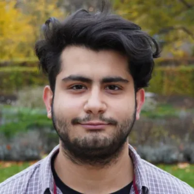

Prof. Dr. Caroline A. Ross
Caroline A. Ross is Ford Professor of Materials Science & Engineering at the Massachusetts Institute of Technology. Her research spans magnetic, ferroelectric, and multiferroic materials, primarily oxide thin films, for device applications; magneto optical films for integrated photonics; and oxide nanocomposites and self-assembly of block copolymers for nanoscale lithography and fabrication.
email:

Dr. Vincent Cros
Deputy Director of the Albert Fert Laboratory, Vincent Cros has devoted his research career to advancing an emerging field of physics: spintronics, or spin electronics. In particular, he has worked on the physics of charge-spin conversion effects and spin transfer, as well as on skyrmions, subjects of fundamental physics with many potential applications. Today, he also spends part of his time co-directing the Priority Program and Equipment for Exploratory Research (PEPR) SPIN, which supports spintronics research aimed at developing efficient, agile and sustainable digital technologies.
email:

Prof. Dr. Felix Büttner
Felix Büttner is Professor of Experimental Physics at the University of Augsburg, where he also investigates topological magnetic textures, chiral magnetic materials, and spin‐orbit torques. He combines ultrahigh‐resolution and time‐resolved coherent X‐ray imaging with micromagnetic modeling, and works in collaboration with the Helmholtz‐Zentrum Berlin.
email:

Prof. Dr. Giovanni Finocchio
Giovanni Finocchio is an Associate Professor of Electrical Engineering at the University of Messina, Italy. Since 2018, he is co-director of the “Joint Laboratory UNIME-SINANO of PETAscale computing and SPINtronics – PETASPIN” which is active in the design, simulation, realization and experimental characterization of spintronics devices. He is also the president of the Petaspin association which main missions are to support scientific research in many fields of engineering and applied physics and to disseminate scientific results through conferences and meetings.
email:

Prof. Dr. Markus Garst
Markus Garst is a theoretical physicist at the Karlsruhe Institute of Technology, heading the Working Group “Theory of Competing States of Matter” within the Institute for Quantum Materials and Technologies. His research focuses on collective phenomena in quantum materials, especially how spin, charge, orbital, and lattice degrees of freedom interact, giving rise to non‐trivial metallic, magnetic, and topological phases.
email:

Dr. Silvia Tacchi
Silvia Tacchi is Senior Researcher at the Istituto Officina dei Materiali of the Italian National Research Council. Her work is mainly dedicated to the study of magnetization dynamics in low dimensional systems such as thin films, multilayers, lateral confined systems, magnonic crystals, and magnetic spin textures by using both conventional and micro-focused Brillouin light scattering (BLS) spectroscopy.
email:

Dr. Stefano Fedel
Stefano Fedel completed his PhD in Physics at the Autonomous University of Barcelona and ICMAB-CSIC. His research focuses on current-driven dynamics of chiral spin textures in magnetic insulators detected by MOKE microscopy.
email:

Dr. André Thiaville
email:

Dr. Yuriy Mokrousov
email:

Dr. Sabri Koraltan
email: